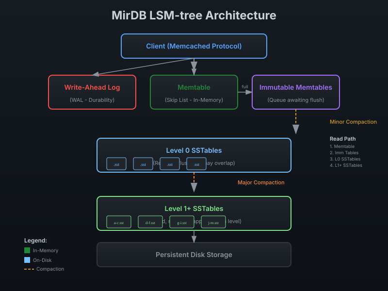

MirDB: A Persistent Key-Value Store with Memcached Protocol
Drop-in replacement for memcached with persistent storage. Built with Rust for memory safety and high performance.

Key Features
Powerful capabilities that set MirDB apart
Memcached Protocol
Drop-in replacement compatibility with the memcached protocol. Use your existing memcached clients and libraries without any code changes.
Persistent Storage
Built on LSM-tree architecture for durable data persistence. Your data survives restarts with write-ahead logging and efficient compaction.
High Performance
Skip list-based memtable for fast in-memory writes. SSTable compaction ensures optimal read performance and efficient disk usage.
Rust Implementation
Written in Rust for memory safety and high performance. No garbage collection pauses, zero-cost abstractions, and fearless concurrency.
Architecture
Built on LSM-tree for high write throughput and efficient storage

Memtable (Skip List)
In-MemoryThe Memtable serves as the active write buffer, implemented using a skip list data structure for O(log n) insertions and lookups. When the Memtable reaches its size threshold (default 4MB), it becomes immutable and is queued for compaction while a fresh Memtable takes over.
SSTables (Sorted String Tables)
On-DiskSSTables are immutable, sorted files stored on disk. Each SSTable contains data blocks with prefix compression, an index block for efficient key lookup, and a Cuckoo filter for fast negative lookups. Files are organized into levels, with Level 0 allowing overlaps and higher levels maintaining strict key ordering.
Write-Ahead Log (WAL)
DurabilityThe Write-Ahead Log ensures durability by persisting every write to disk before acknowledging it. Each WAL segment corresponds to one Memtable. In case of crash, the WAL allows complete data recovery by rebuilding Memtables from the logged operations.
Compaction
Background
Minor Compaction: Flushes immutable Memtables to Level 0 SSTables when the Memtable is full.
Major Compaction: Merges SSTables between levels to reduce read amplification and reclaim space. Triggered when Level 0 accumulates too many files or when level sizes exceed thresholds.
Usage & Code Examples
MirDB supports the standard memcached protocol. Use your existing clients with these commands.
SET - Store a Value
Store a key-value pair with optional expiration time and flags.
set mykey 0 0 5
hello
STOREDGET - Retrieve a Value
Retrieve the value associated with a key.
get mykey
VALUE mykey 0 5
hello
ENDADD - Add Only if Key Doesn't Exist
Store a value only if the key doesn't already exist.
add newkey 0 0 4
test
STOREDREPLACE - Replace Existing Value
Replace a value only if the key already exists.
replace mykey 0 0 5
world
STOREDAPPEND - Append to Existing Value
Append data to an existing key's value.
append mykey 0 0 6
_extra
STOREDPREPEND - Prepend to Existing Value
Prepend data to an existing key's value.
prepend mykey 0 0 4
pre_
STOREDDELETE - Remove a Key
Delete a key and its associated value.
delete mykey
DELETEDProject Status & Roadmap
Track our progress and see what's coming next
Implemented Features
- Tokio with memcached protocol
- Memtable with skiplist
- Minor compaction
- Major compaction
Planned Features
- Raft consensus protocol